Frostmoon Haven
A dominant copper-roofed keep, a deep frozen ocean, richer winter planting, and a more satisfying restoration journey.
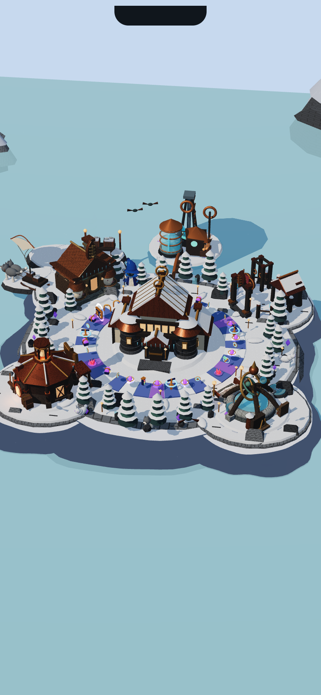
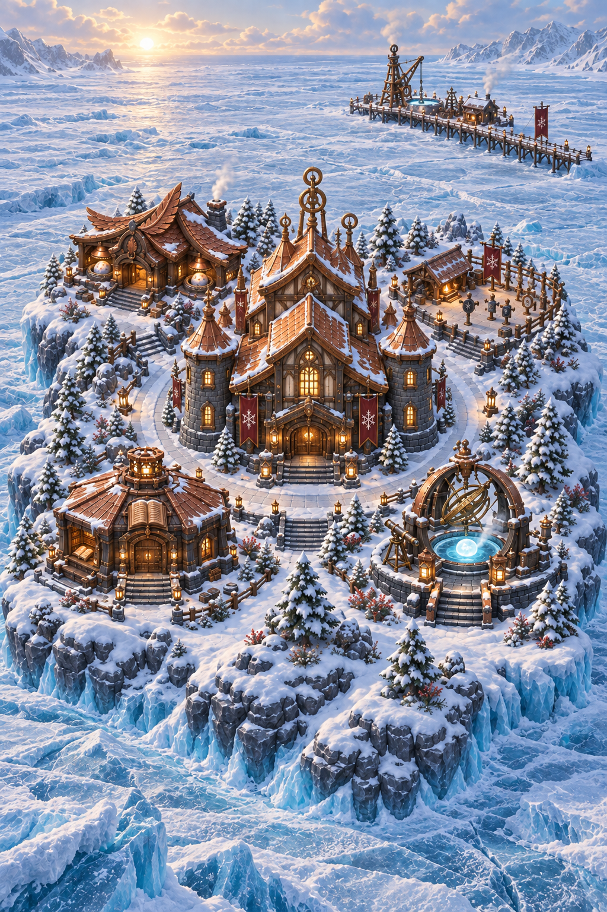
The smaller landmarks retain their approved identities and palette accents. The final model must keep the whole route readable beneath the real HUD and controller. Full-resolution images open when clicked.
Five landmark identities
Fresh V1 focus views paired with the existing August-approved construction references. These references are generated art, not actual V2 renders. The new full-island goal establishes landscape and central hierarchy; these sheets retain construction detail and side/rear intent.
Snowfeather Roost
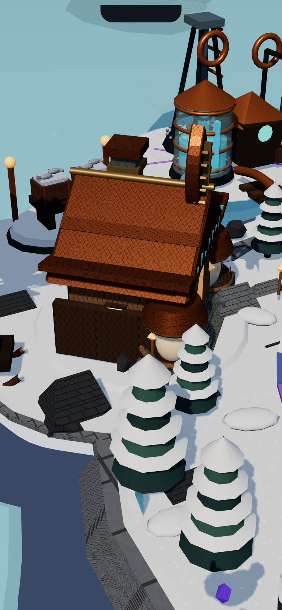
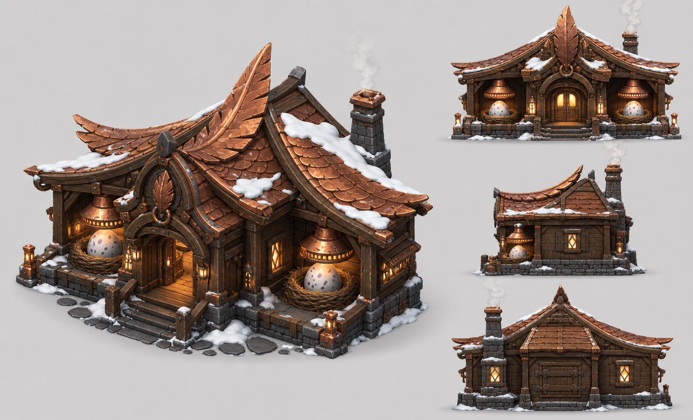
Hearthguard Yard
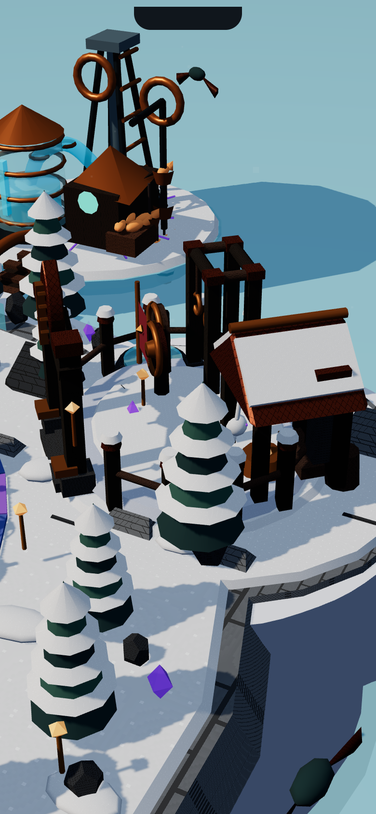
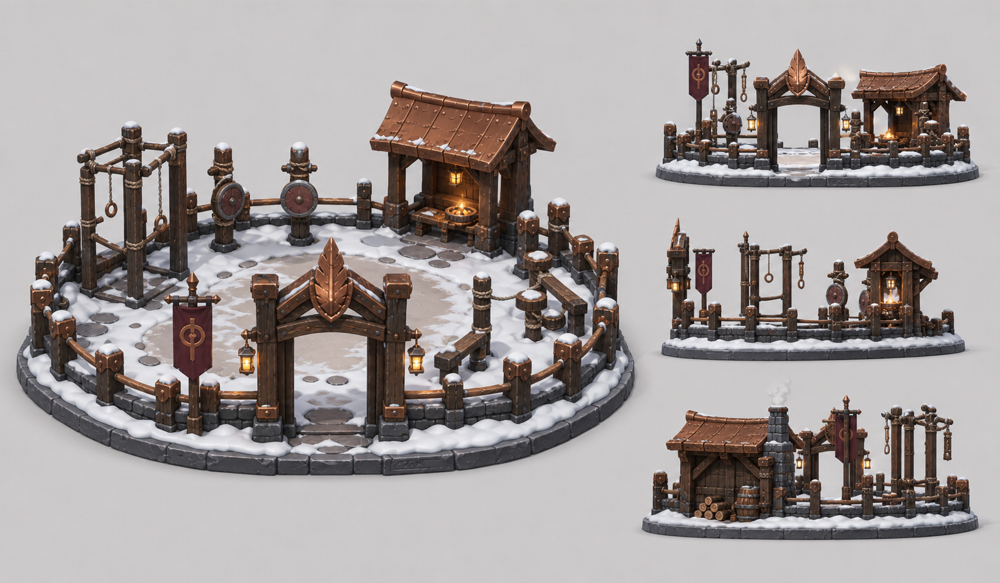
Moonwell Observatory
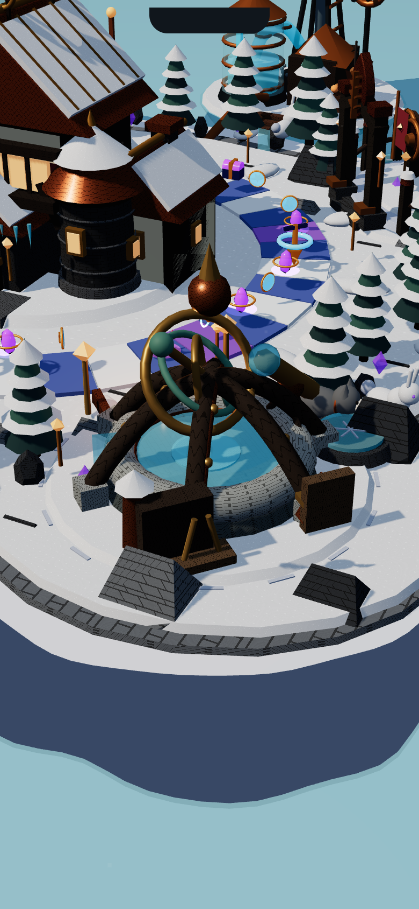
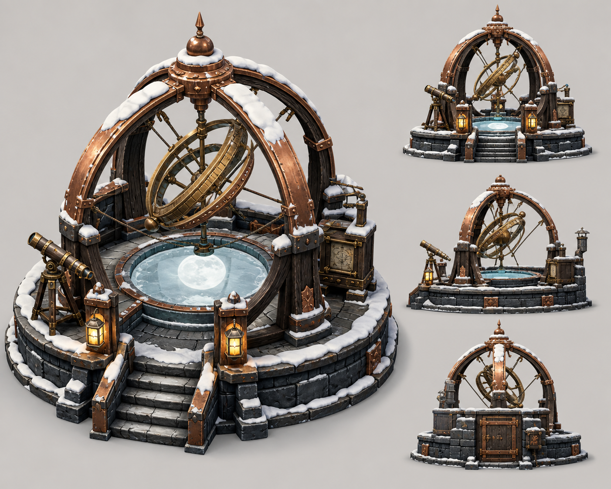
Frostfire Archive
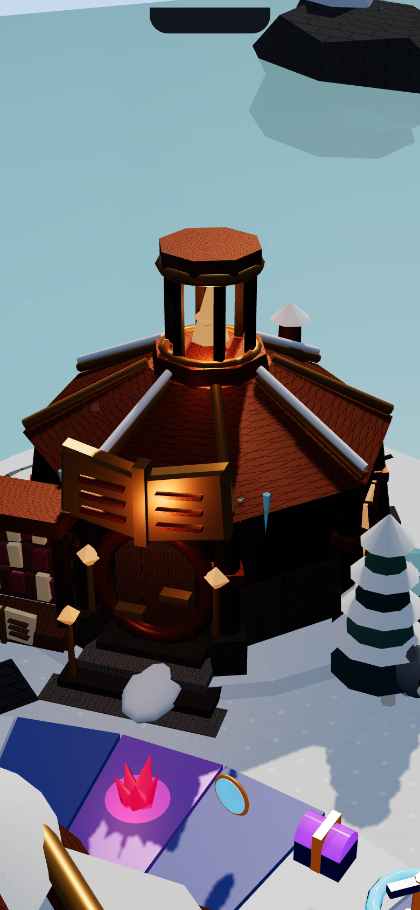
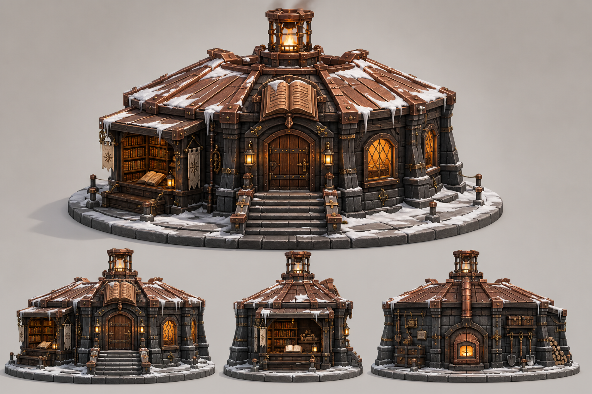
Aurora Keep
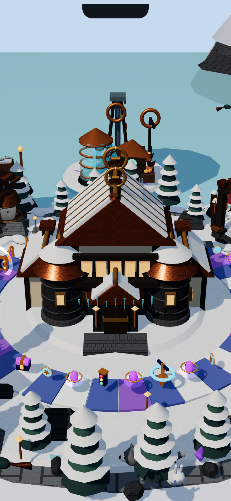
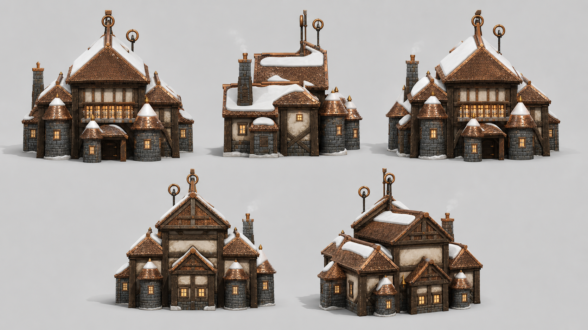
Two restoration experiences
Mission phone → earned spin → auger bites and descends → 500 m breakthrough → fishery startup → completion celebration → inspect the working business.
Keep automatic commissioning, canonical wheel results, existing fishery/trade state, interruption safety and reduced motion.
Build Observatory L3 → heat symbol appears on an eligible tile → land to unlock Boil water → focused slow thaw → gentle bubbling and steam → permanent warm basin.
No extra currency or reward is assumed. The surrounding ocean remains solid ice. The landmark's existing activity and island-clear rules stay separate.
Why the mission phone can say 0/5
Confirmed: many signature-mission rows say “Build Landmarks” but actually count buildings that are both Level 3 and have their activities completed (plus a terminal Hatchery egg). In synthetic fixtures, five L3 buildings with unfinished activities display 0/5. Standard mission rows already separate the counts.
Proposed fix: show buildings upgraded and activities completed explicitly, preserving completion requirements. This investigation does not show missing player build data. Read the investigation.
Production gate
15 bounded groups. First: dominant Keep with adjoining frozen terrain and representative planting, plus early batching/profiling. Then five landmark levels, Frostwell, Moonwell and the shared counter correction. Independent review and physical-device checks remain required; the Island 002 waiver does not transfer.
V1 already reports thousands of draw calls in this development preview. More detail must follow measurable cost reduction. No V2 implementation or publishing is claimed.